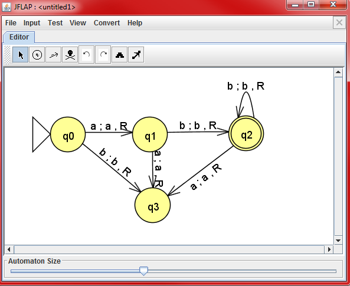

JFLAP is software for experimenting with formal languages. It allows us to construct nondeterministic finite automata or parse different types of grammars. In this case, we constructed a simple Calculator using a Turing Machine. We used JFLAP 7.0, which is NOT the most updated version. You can get JFLAP 7.0 here.

A basic Turing machine takes in a "tape" of input and processes the first value and determines if the machine will read the left or right value next. The circles represent the current state the machine is in, starting with the state with the big triangle (p0). The lines represent valid input to proceed to the next state. This line takes 3 values: input(the current value on tape), output(what to print on tape), and direction (L/R). If the state does not have a line that can take the input, the machine will halt and stop. A double circle indicates an accepted state.
This machine will only take the input of "starting with one a and infinite amount of b's". Any other input such as "aab" or "bb" will not be accepted.
The goal is to create a simple binary calculator. The calculator must have the following:
First, we initialize the registers before taking any input then look for the first letter of a valid command. Each command has many configurations to handle all kinds of values.
All these blocks can by viewed by right clicking on the state in the high-level design and selecting "Edit Block".
This menu can be accessed in the toolbar in "Input" -> "Multiple Run".